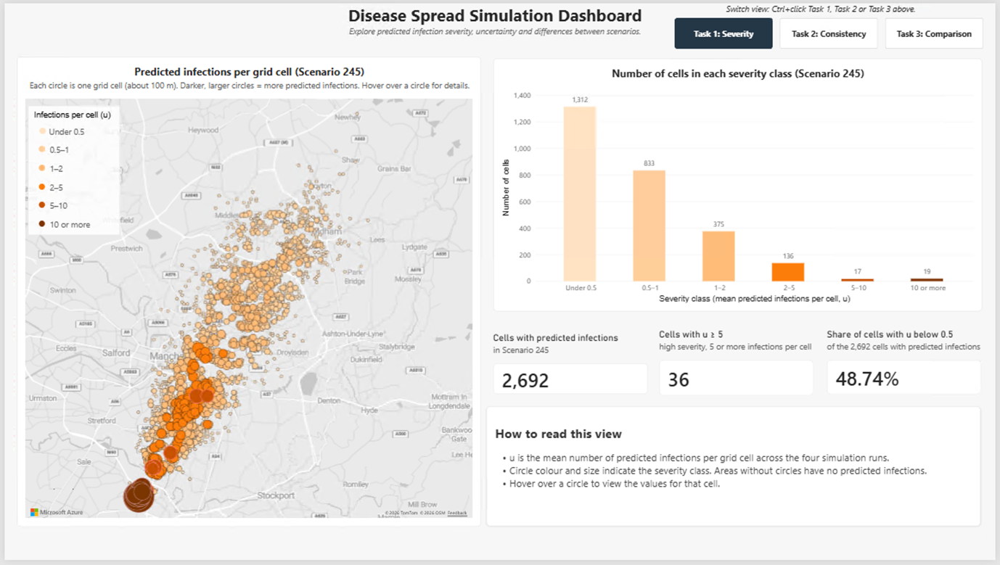
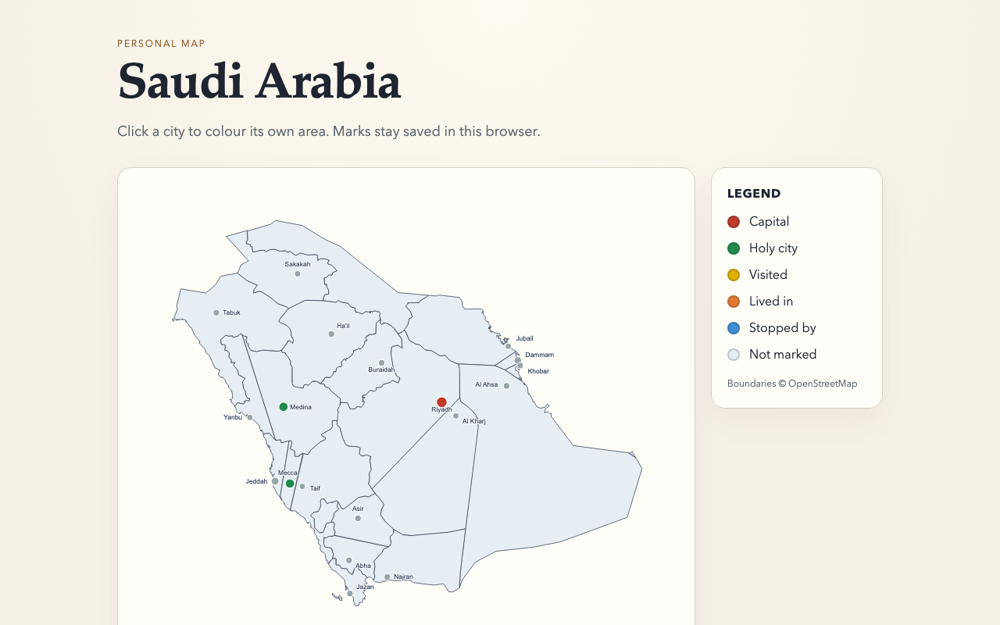

Software
Newcastle · Leicester
Noreen Alnageeb.
First-class Software Engineering at Leicester, now an MSc in Advanced Artificial Intelligence at Newcastle. I build software, analyse data, and train models.
Skills
What I use.
Languages, the tools around a model, and the software that ships it.
- 01
Programming
Python, JavaScript, Java, C++, R, SQL.
- 02
Languages
Arabic and English, both fluent.
- 03
Data
pandas, PostgreSQL, MySQL, Power BI, D3.js.
- 04
AI
scikit-learn, regression, random forests, clustering, OpenCV, scikit-image.
- 05
Software
React, Node.js, Git, Android, Spring Boot, Socket.IO.
- 06
Cybersecurity
Wireshark, TCP, TLS, Kerberos, DNS, encryption, digital signatures.
- 07
Soft skills
Teaching, mentoring, leading a group build, accessibility, lab support.
Education
The path.
-
2026 — NOW
MSc Advanced Artificial Intelligence
Newcastle University.
-
2023 — 2026
BSc Software Engineering
University of Leicester.
First class -
BEFORE THAT
A levels and GCSEs
Mathematics, Business, Chemistry. Seven GCSEs, including a 9 in Mathematics.
Work
Projects.
Retinal vessels
Uneven light was hiding the vessels. Removing it lifted vessel IoU from 0.14 to 0.54. One fixed pipeline then reached 0.67, including on images it was not tuned on.
- Python
- scikit-image
- OpenCV
- NumPy

Street crime, 2023
Cleaned about 1.1 million Metropolitan Police records and compared two models. The forest reached MAE 3.47 and R² 0.93, against 4.93 and 0.92 for linear regression, then grouped areas into five profiles.
- Python
- pandas
- scikit-learn

Disease spread
Split a simulated outbreak into severity, agreement across four runs, and a second scenario. That scenario’s predicted total was about 13% lower.
- Power BI
- Maps
NeuroEase
Built alone, with a site for the caregiver and a site for the patient. A study with 25 people scored 76.4 and 78.7, and the written comments changed the interface.
- React
- Node.js
- PostgreSQL

GreenBrighton
Six interviews decided what people needed to know. The site explains eco-friendly places in Brighton and is built to WCAG 2.1 AA.
- D3.js
- JavaScript
- Accessibility

Network security
Four teaching captures. Each one is a normal protocol, then the weakness in the packets. Pair work with Muhammad Abdullah Malik.
- Wireshark
- TCP
- TLS
- DNS
File recovery
One sample file is returned only after the server can verify who is asking. Pair work with Muhammad Abdullah Malik.
- Java
- Encryption
- Signatures
Skills Hive
Led the group. Shipped the dashboard, the course page, the game, and the chatbot.
- JavaScript
- HTML
- CSS


Course manager
Courses and the students enrolled on them, with the same screens in the browser. A trio project.
- Android
- Java

Construction thermometer
Seven construction sectors, read from public headlines. Built alone. Fourth place at Project:Hack 20.
- HTML
- CSS
- JavaScript
CO₂ emissions
A 2002 emissions map, and Japan’s population against emissions. With Muhammad Abdullah Malik.
- D3.js
- Maps
University database
Departments, staff, students, and courses. With Ajan Mudey and Aisha Tasneem Muhammad.
- SQL
- MySQL
Project allocation
Change the choices, then allocate, using the same steps as the C++ program. With Ayan Muday.
- C++


Experience
Teaching and awards.
Database lab assistant
University of Leicester. Weekly labs for 100+ students: SQL, schema design, ER modelling, and normalisation.
Computer architecture lab assistant
Two terms at Leicester, about 20–40 students a week, taking system concepts apart into clear steps.
Business and financial computing lab assistant
First-year labs at Leicester, on data-driven tasks and clear write-ups.
Peer mentor
Voluntary. Fifteen first-year students, across two years, on study planning and settling into Leicester.
Hackathons
First place at the IBM CIC Computer Science Society hackathon, in a team, on a prototype for international students. Fourth place at Project:Hack 20 for the construction dashboard.
Contact
Say hello.
Arabic and English. Happy to talk about a software role, a data role, an AI role, or the work above.